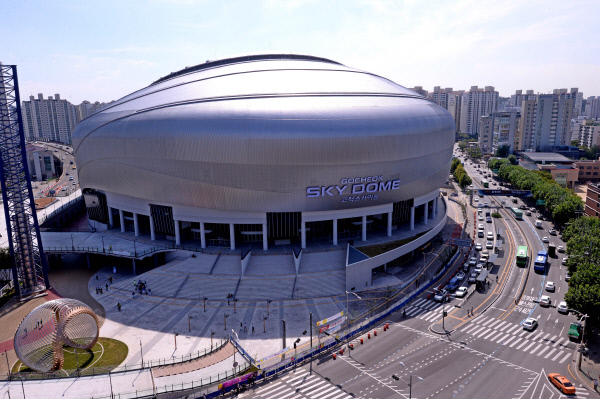

KBO 리그의 프로야구단. 연고지는 서울특별시.
홈 구장은 구로구 고척동에 위치한 고척 스카이돔이다.
2007년 해체된 현대 유니콘스의 선수단과 프런트를 승계하여 KBO의 제 10번째 구단으로 창단했다.
홈 구장은 고척 스카이돔. 두산 베어스, LG 트윈스와 함께 서울을 연고로 삼는 3개 팀 중 한팀이다.
다른 프로야구 구단들은 특정 기업의 이름을 팀명으로 사용한다. ex) LG 트윈스, 두산 베어스 , NC 다이노스
그러나 히어로즈는 구단 자체가 하나의 사업체로써, 팀명 '히어로즈' 앞에 후원사의 이름을 붙이는 사업 모델을 추구한다.
따라서 후원사의 이름에 따라 구단 이름이 바뀐다.
만약에 시즌 도중에 후원사가 바뀌면, 팀명이 바뀌는 특이한 케이스도 있었다.
실제로 2008년 시즌 우리담배의 후원을 받아 '우리 히어로즈'로 진행하다가, 중간에 후원이 끊겨서 '서울 히어로즈'로 구단명이 바뀌기도 하였다.
현재는 키움증권의 메인 후원으로 구단명은 '키움 히어로즈'이다.
2. 구단 플레이 스타일 관련
현대유니콘스의를 이어받고, 초창기 감독으로 KBO 레전드 투수중 한명인 김시진 감독의 영향으로 초반에는 스몰볼 야구를 지향하였다.
* 스몰볼 야구 = 타격이나 장타력을 통한 다득점 보다는 수비와 주루, 제구와 변화구를 바탕으로 투수 중심의 소실점을 추구
그러나 2012년 거포 유망주 박병호를 영입과 함께, 염경엽 감독의 부임으로 공격적인 타격과 장타력을 기반으로 한 빅볼 야구를 지향하였다.
2013년 부터는에는 넥벤져스 타선 이택근, 박병호, 강정호 LPG 트리오를 바탕으로 엄청난 타선의 힘을 보여주었다.
특히 2014년에는 역대급 타선의 신기록을 보여주었는데 그 기록들을 간략히 살펴보면
강정호의 40홈런 , 경기당 1타점 ( KBO 최초 유격수 40홈런 , 117경기 117타점 즉 경기당 1타점, 장타율 0.739 메이저리그 직행)
서건창의 201안타 (현재는 정규시즌 144경기지만 당시에는 정규시즌 128경기 요즘도 200안타는 나오지 않는데 그 당시에는 역대급 신기록)
박병호의 52홈런 (128경기 52홈런 124타점 126득점 클린업이 득점2위인 클라스, KBO최강의 홈런타자, 이를 통해 메이저리그 진출)
위 3명의 선수는 14시즌 출루율 각각 2, 4, 5위 그냥 레전드 그자체였다. 글을 쓰는 지금도 어마무시...소름...
투수 부분에서도 외국인 투수 벤헤켄의 20승, 마무리 손승락의 32세이브로 역대급 시즌을 보냈다
이를 바탕으로 팀순위도 포스트시즌권으로 끌어올림과 동시에 2014년에는 한국시리즈에 진출해 준우승을 하게 되었다.
이후 내야수출신 메이저리그를 한번에 2명이나 (박병호, 강정호) 보내었으며, 그 공백으로 잠시 주춤하였으나...
2018년 박병호가 돌아온 이후 매년 포스트시즌에 진출하며 다시 리그 최정상급의 팀임을 증명하였다.
키움 타자 단일시즌 기록
서건창, 강정호, 박병호 -----> 이정후, 김하성, 김웅빈 으로 세대 교체가 되었으면 하는 바람....(김혜성도 화이팅!)
구단 이름
1. 우리 히어로즈 (2008)
2. 서울 히어로즈 (2008 ~ 2009)
3. 넥센 히어로즈 (2010 ~ 2018)
4. 키움 히어로즈 (2019 ~ 현재)
팀 역대 순위
홈 구장
고척 스카이돔

창단 2008년 ~ 2015년 까지는 목동야구장을 홈 구장으로 이용해왔다.
2016년부터 히어로즈는 고척 스카이돔 을 홈 구장으로 이용한다.
고척 스카이돔은 대한민국 최초의 돔 구장이며, 외부 날씨 환경의 영향을 받지 않아 우천취소가 없다는 큰 장점이 있다.
이에 따라 여름에 직관을 오면 에어컨 바람과 함께 시원하게 야구 관람을 할 수 있다.
물론 그만큼 야구장 가격이 다른 구장에 비해 꽤 비싼 편이다.
내부 구조는 위 사진 처럼 구성되어있다.
외야에는 관중석이 거의 없는 구조이지만, 관계자 및 고위 운영진에게 제공되는 사무실, 다이아몬드클럽에서의 뷰는 굉장히 탁월하다.
창단 이후에는 정민태의 20번이 임시결번이었다.
그러나 정민태가 2012 시즌 이후 롯데 코치로 떠나자 결번이 깨졌고, 장효훈이 20번을 물려받았다.
2011년 이숭용이 은퇴하고 나서 구단에서 그의 등번호인 10번을 영구결번하려고 했지만 선수 본인이 거절했다고 한다.
2018년 이전에는 이택근의 29번이 그나마 영구결번감이라는 평가를 받았다.
이것도 굳이 고르자면 그렇다는 것이고 히어로즈 팬덤 내에서도 가능성 없다는 평이 대세였다.
2018년 이택근 문우람 폭행사건이 폭로되어 영구결번은 커녕 흑역사가 될 위기에 처했다.
현재 유력한 후보는 박병호의 52번과 서건창의 14번 정도. 재미있게도 둘 다 LG 트윈스 출신이다.
박병호는 거포유망주였지만 성장에 실패했었고 서건창은 한 경기 뛰고 방출된 후에 현역으로 입대하고나서 넥센에 신고선수로 지냈었다.
둘 다 넥센에서 터졌고 현재도 키움의 부흥기를 이끌고 있는 주축이기에 키움의 영구결번 레전드로 충분하다.
두 선수 모두 사고치지도 않는 성격이라 이적이라도 하지 않는 이상 무난히 받을 듯.
김하성과 이정후는 이미 학실시 되어있는 살아있는 레전드이자 한국의 미래이다.